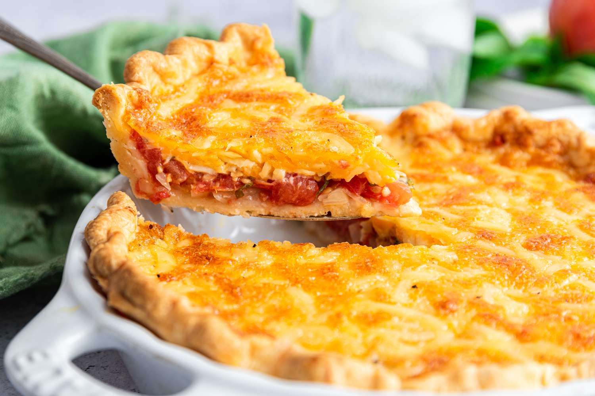

Tomato Pie

Descrption
Savory Tomato Pie: A Southern Summer Delight
This classic Southern tomato pie combines the rich flavors of ripe tomatoes, crispy bacon, and aromatic herbs, all nestled in a flaky pie crust.
Topped with a creamy cheddar-mayo mixture, it's baked to golden perfection, offering a comforting dish that's both hearty and refreshing.
Ideal for summer gatherings or as a flavorful side, this pie showcases the best of seasonal produce in every bite.
Ingredients
- 1 cup mayonnaise
- 1 cup shredded Cheddar cheese
- 1 tablespoon grated Parmesan cheese
- 1 teaspoon dried basil
- 1 teaspoon salt
- 4 large tomatoes, sliced
- 1/2 cup chopped green onions
- 1 (9-inch) unbaked deep-dish pie crust
- 6 slices bacon, cooked and crumbled
Steps
-
Preheat your oven to 350°F (175°C).
-
In a medium bowl, mix together mayonnaise, shredded Cheddar cheese, Parmesan cheese, dried basil, and salt until well combined.
-
Place the pie crust in a 9-inch deep-dish pie plate.
-
Arrange the sliced tomatoes evenly over the pie crust.
-
Sprinkle the chopped green onions and crumbled bacon over the tomatoes.
-
Spread the mayonnaise and cheese mixture evenly over the top.
-
Bake in the preheated oven for 30 to 35 minutes, or until the pie is set and the top is golden brown.
-
Let the pie cool slightly before slicing and serving.
Home